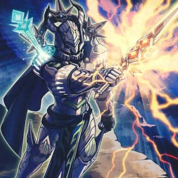
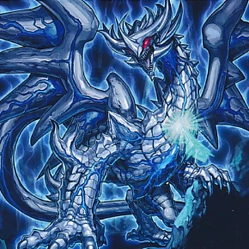
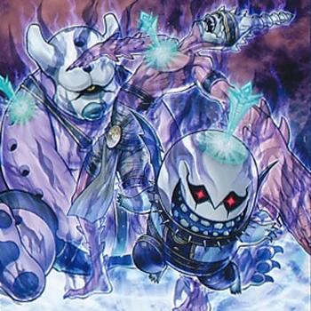
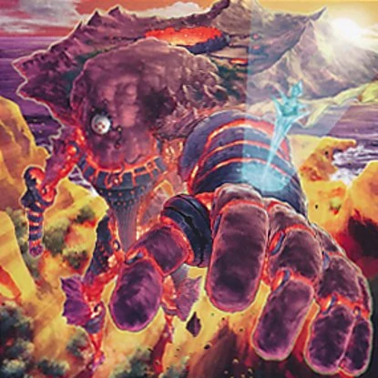
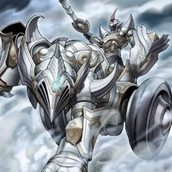
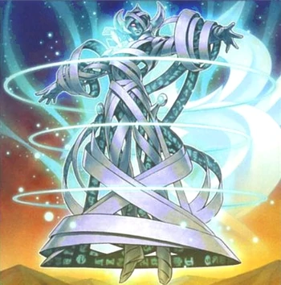

ALISTER THE INVOKED
Atributos
(Efecto Rápido): puedes mandar al Cementerio esta carta en tu mano, y después seleccionar 1 Monstruo de Fusión que controles; hasta el final de este turno, éste gana 1000 ATK/DEF.
Si esta carta es Invocada de Modo Normal o volteada boca arriba:
puedes añadir a tu mano, desde tu
La transformacion de aliester CALIGA
INVOCACIONES DE ALIESTER
Raidjin Invokado
Cocito Invokado
-
Purgatrío Invokado
 Magellánica Invokada
-
Mechaba Invokada
 -
Augoeides Invokado

quieres saber mas